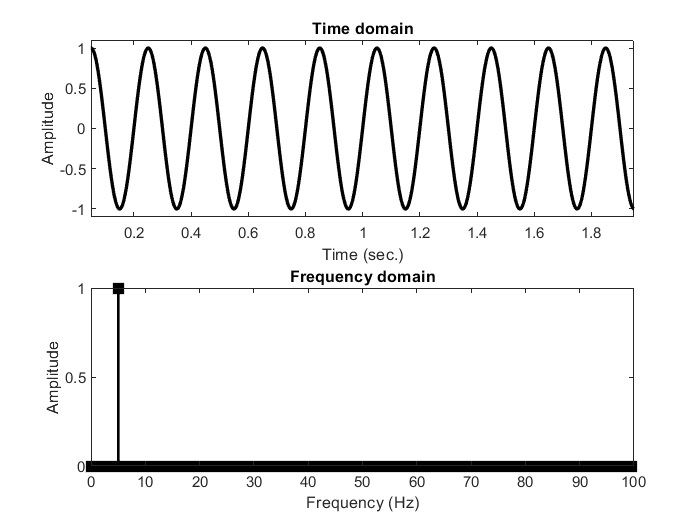
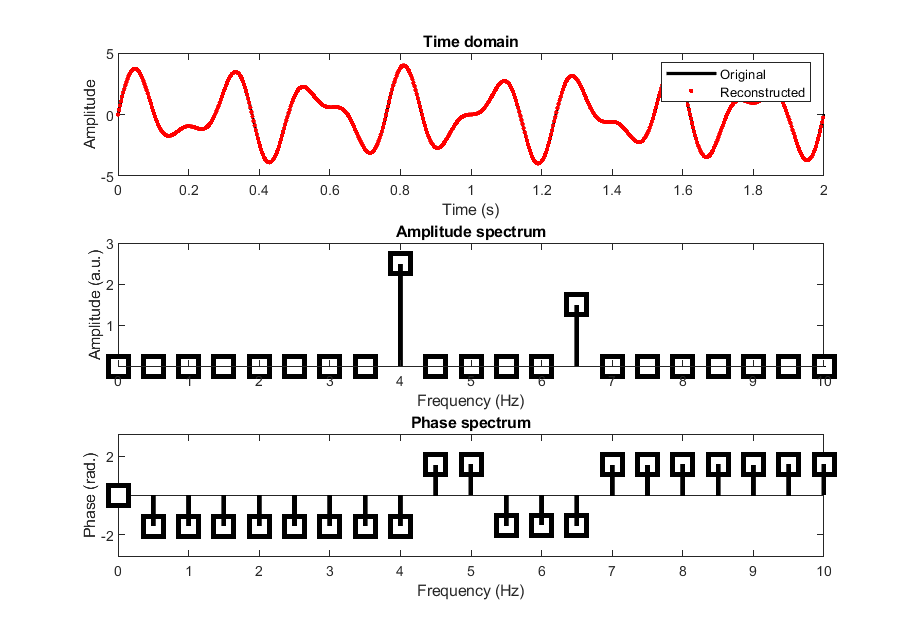
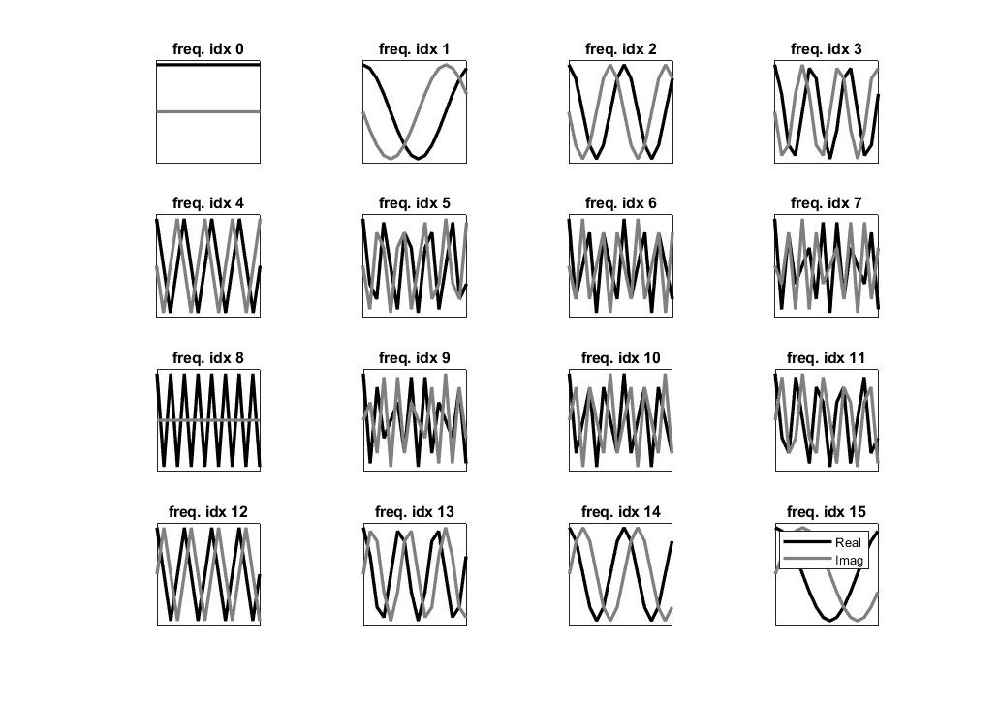
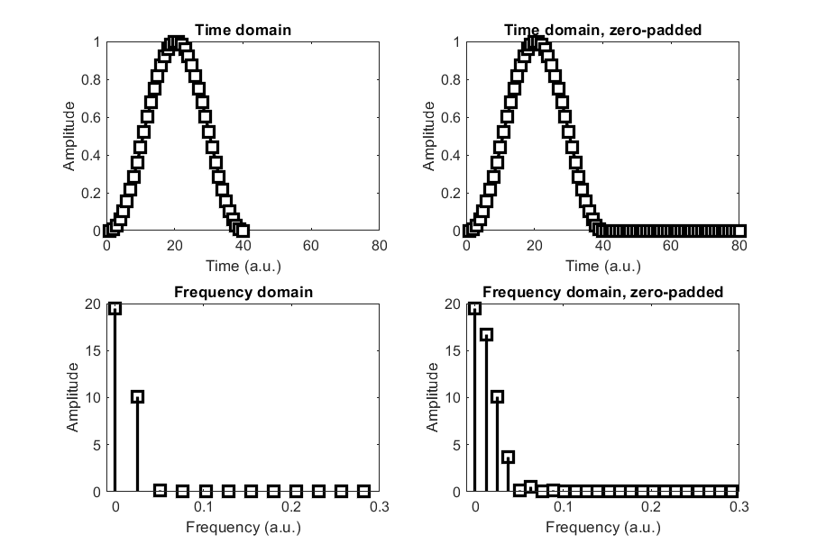
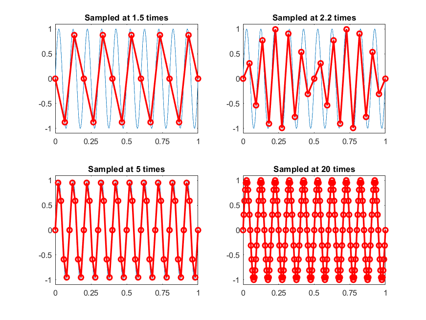

Fourier Transform Course
Introduction
The Fourier transform states that any signal can be perfectly represented as a sum of sine waves, each having its own phase, frequency, and amplitude. This provides an efficient way to transform a signal from the time domain to the frequency domain. The Fourier transform provides two sets of information about the signal, per frequency:
- Power: a.k.a. amplitude, energy, or magnitude, measures the vertical distance of the waves
- Phase: the value of the sine wave when it crosses $x=0$. Phase is a circular property measured in radians. Phase offsets have no effect on the amplitude spectrum.
Broadly speaking, the Fourier transform is used for two purposes:
- As a method to inspect frequency-specific energy and phase dynamics of a signal or image
- As an intermediary tool in an algorithm, such as filtering or convolution. Using the fast Fourier transform (FFT) to move quickly between the time and frequency domains is useful because of the convolution theorem, which allows many time-domain operations to be performed in the frequency domain, more quickly than the corresponding time-domain operation.
The results of a Fourier transform are easily visually interpreted for stationary signals that contain rhythmic components. However, it is a lossless transform, regardless of signal properties, and can be extended from 1D to 2D, such as an image.

Foundations of the Fourier Transform
To understand the Fourier transform, you must understand three mathematical concepts:
- Sine Waves: sine waves have the three properties 1) frequency, 2) power, and 3) phase.
- Complex Numbers: complex numbers have both a real part and an imaginary part, and can be represented on the 2D complex plane.
- Dot Product: a single number that reflects the relationship between two vectors. To compute, point-wise multply the corresponding elements and sum over all elements. The larger the dot product (after accounting for scaling), the more similar the two vectors.
The geometric interpretation of a complex number leads to the concept of 'length' and 'angle' of a complex number. Length is $m = \sqrt{ real(z)^2 + imag(z)^2 }$, and angle is the inverse tangent of the imaginary part over the real part, $\phi = atan \left( \frac{imag(z)}{real(z)} \right)$. When the length is the signal amplitude and the angle is the signal phase.
When you compute the dot product between a real-value signal and a complex sine wave, the resulting dot product is also a complex number. The dot product of the signal with a complex sine wave is called a Fourier coefficient.
To compute the Fourier transform, compute the dot product between a signal and complex sine wave. The magnitude of the dot product is the signal amplitude at the frequency of the sine wave, and the angle of the dot product with respect to the positive real axis is the phase of the signal at that frequency. This procedure is repeated for many sine wave frequencies, and the result is a power or phase spectrum.
The Discrete Time Fourier Transform (DTFT)
The DTFT involves computing the dot product between complex sine waves and the signal. There are as many complex sine waves as data points. The resulting complex dot products are called Fourier coefficients, and from that complex number you extract the magnitude (amplitude, the square root of power) and angle relative to the positive real axis. The procedure is as follows:
- Create a time vector for the sine wave, which goes from $0$ to $1-dt$ (where $dt$ is a sample time step), in a number of steps corresponding to the number of time points in the signal.
- Create a loop over time points:
- Create a complex sine wave as $e^{-i 2 \pi f t}$ where $i=\sqrt{-1}$, $f$ is the frequency and is set by the looping index minus one (the first frequency is $0$), and $t$ is the time vector.
- Compute the dot product between that complex sine wave and the signal. The signal does not change, only the frequency of the complex sine wave. The resulting complex dot product is the Fourier coefficient for the frequency.
The raw frequencies are indices, not meaningful units such as $Hz$. To convert from indices to frequencies, compute a linearly spaced vector of $N/2+1$ numbers, where $N$ is the number of time points, between $0$ and the Nyquist (one half of the sampling rate). The frequencies can be organized into four groups:
- $0 Hz$ (the DC or direct current)
- Positive Frequencies (between DC and the Nyquist)
- Nyquist (half of the sampling rate)
- Negative Frequencies (above the Nyquist)
A real valued signal has amplitudes split between the positive and negative frequencies. This is a result of the cosine identity, which states that a real-valued cosine can be made from the combination of two complex exponentials: one with a negative exponent and one with a positive exponent.
$$cos(k) = 0.5(e^{ik} + e^{-ik})$$
To reconstruct the amplitude of the original signal, you double the amplitudes of the positive frequencies and ignore the negative frequencies. This is one of two normalization factors you need to apply to recover accurate amplitudes from the Fourier transform. The other factor is to divide the Fourier coefficients by $N$, the number of time points. This is because longer signals have larger dot products. These two normalizations are necessary only if interpreting the amplitude/power results of the Fourier transform, not if simply using the Fourier transform as a tool in signal processing.


The Inverse Fourier Transform
Getting back from the frequency domain to the time domain is implemented via the inverse Fourier transform. The procedure is as follows:
- Create a time vector for the sine wave, which goes from $0$ to $1-dt$, in a number of steps corresponding to the number of time points in the signal
- Create a loop over time points:
- Create a complex sine wave as $e^{i 2 \pi f t}$. Note the lack of a negative sign, compared to the forward Fourier transform.
- Multiply that sine wave by the complex Fourier coefficient obtained from the forward Fourier transform. Then sum the sine waves together.
The Fast Fourier Transform
The fast Fourier transform (FFT) is much faster than the alternatives. There are several algorithms for it, but they generally work by:
- Putting all of the complex sine waves into a matrix
- Decomposing that matrix into many other sparse matrices
- Perform a series of matrix-matrix and matrix-vector multiplications
The fast inverse Fourier transform is called the IFFT. The two normalization steps you need to apply are the same as for the loop-based Fourier transform.
There are (at least) two ways to understand why the Fourier transform is a lossless transform:
- Linear Algebra: when the complex sine waves are columns in a matrix, it is a $N \times N$ matrix with linearly independent columns, meaning it has an inverse. So if the sine waves are in matrix $F$ and the signal is in row vector $s$, then $sF = c$ gives the Fourier coefficients in row vector $c$, and you can compute $s = cF^{-1}$.
- Statistics: think of the time series signal as a dependent variable and the sine waves as independent variables in a model. The zero frequency component is the intercept. The collection of independent variables is the model, and the Fourier coefficients are the regression coefficients. The model has $N$ predictors for $N$ data points, and therefore $0$ degrees of freedom. A model with $0$ degrees of freedom accounts for $100%$ of the variance in the data.
Frequency Resolution and Zero Padding
The sampling theorem describes the frequency limit that you can measure, given your sampling rate. There are two important messages about sampling:
- The Nyquist frequency, one half of the sampling rate, is the highest frequency signal you can measure. Dynamics higher than that in the signal can become aliased into lower frequencies.
- The Nyquist limit is not a practical limit. A guideline is to sample at least $5$ times higher than the highest frequency you think will be in the signal.
Frequency resolution refers to the spacing between successive frequencies. If the vector of frequencies is $0, 1, 2, \ldots$, then the frequency resolution is $1 Hz$. It is given by the equation $r = s/n$ where $r$ is the frequency resolution, $s$ is the sampling rate, and $n$ is the number of time points in the FFT.
In the time domain, the resolution is determined by the sampling rate, not the signal length. In the frequency domain, the resolution is determined by the signal length for a fixed sampling rate. Therefore, you can increase frequency resolution by adding zeros to the end of the signal. This procedure is called zero padding; the zeros don't add any new information, they just increase $N$.
There are three reasons to zero-pad a signal:
- To obtain a specific frequency that is not present in the native resolution
- To match FFT lengths for some signal-processing methods like convolution
- To make the power spectral plot look smoother
Zero-padding in the time domain increases frequency resolution. Zero-padding in the frequency domain increases temporal resolution. This is stated by the zero-padding theorem. In the frequency domain, the zeros are added at the Nyquist, i.e., middle of the spectrum.

Aliasing, Stationarity, and Violations
Aliasing is the phenomenon that a feature of a signal or image that is higher than the Nyquist frequency, appears at a lower frequency in the measurement.

Stationarity refers to the reproducibility of the descriptive statistics of a signal (mean, variance, frequency, etc.). There are three sources of ambiguity in this definition:
- Many Features: a signal could be mean-stationary but not frequency stationary
- Window Size and Placement: a signal might look stationary or non-stationary depending on the size of the time windows
- Threshold Dependence: noise threshold must be selected, which could entail bias
Non-stationarities affect the results of the Fourier transform, though it is still a lossless transform. Non-stationary signals have power spectra that can be difficult to interpret. Many solutions to the non-stationarity issue involve time-frequency analyses, which involve examining how the spectral structure of a signal changes over time or space.
The 2D FFT
The 2D FFT is an extension of the 1D FFT. The digital representation of a picture is often a 2D or 3D matrix. To compute the 2D FFT, first compute the normal FFT on each column of the matrix, then compute the FFT on each row of the result. This produces a 2D matrix of Fourier coefficients, from which you can extract amplitude and phase.